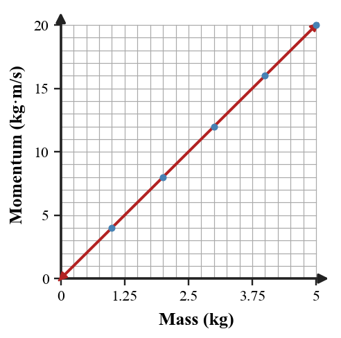

1. Momentum combines which two properties of a moving object? State the relationship in words or symbols.
2. A suitcase is sitting motionless on the floor. What is its momentum? Explain using one variable in $p=mv$.
3. In one sentence, distinguish momentum from impulse.
4. What does the time in $J=Ft$ represent during a collision or push?
5. What physical quantity changes by an amount equal to the impulse delivered to an object?
6. The graph shows momentum for objects moving at the same speed as mass changes. Describe the pattern and use one point to determine the common speed.

7. A 2.5 kg cart moves east at 6 m/s. Determine its momentum, including direction.
8. A 18 N force acts on a puck for 0.30 s. Calculate the impulse.
9. A ball’s momentum changes from +4 kg·m/s to +13 kg·m/s. Determine the impulse and its direction.
10. The same 12 N·s impulse stops two identical carts. One stop lasts 0.04 s and the other 0.12 s. Calculate the average force magnitude in each stop and compare them.
11. A 60 kg runner at 8 m/s and a 120 kg cart at 4 m/s are compared. A student says the cart must have more momentum because it has more mass. Evaluate the claim using evidence.
12. Two identical phones hit the floor with the same speed. Phone A stops in a rigid case in 0.006 s; Phone B stops in a deformable case in 0.018 s. Explain why the momentum changes can be similar while the average forces differ.
13. Which object property is part of momentum but not mass alone?
14. A 4 kg cart moving at 3 m/s has momentum
15. If mass stays fixed and speed doubles, momentum
16. Which expression calculates impulse for a constant force?
17. A 30 N force acts for 0.20 s. The impulse is
18. An impulse of +8 N·s produces which momentum change?
19. For the same momentum change, which modification most directly lowers average collision force?
20. Why can a small fast object have more momentum than a larger slow object?